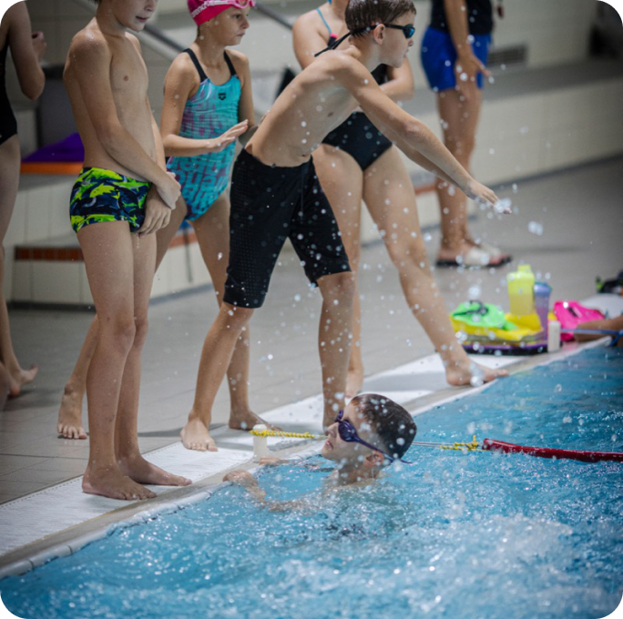
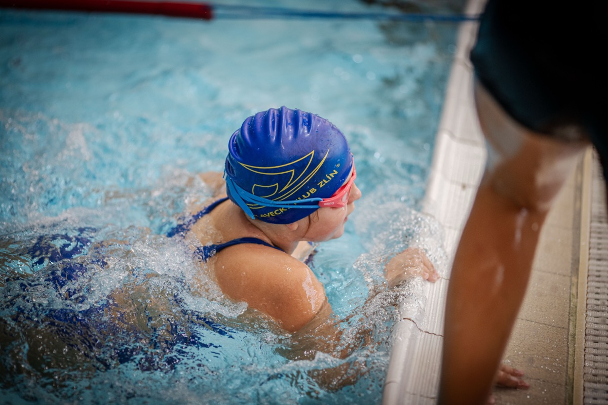
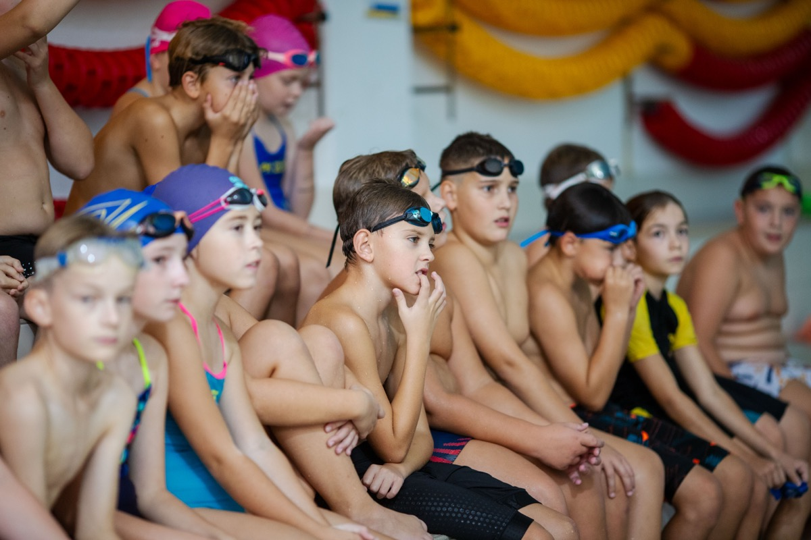

PRO13neděle
Vánoční štafety
Městské lázně Zlín50 m16:00 až 17:30
Štafety ve smíšených družstvech, na závěr vánoční posezení.
Klubové závody pro plavce klubového plavání. Zkusí si start, obrátky i atmosféru opravdového závodu.

Klubové závody pro plavce klubového plavání. Děti si vyzkouší start, obrátky i atmosféru opravdového závodu.




Štafety ve smíšených družstvech, na závěr vánoční posezení.
Tréninky ve vodě i na suchu. Přihlášky u trenérů.